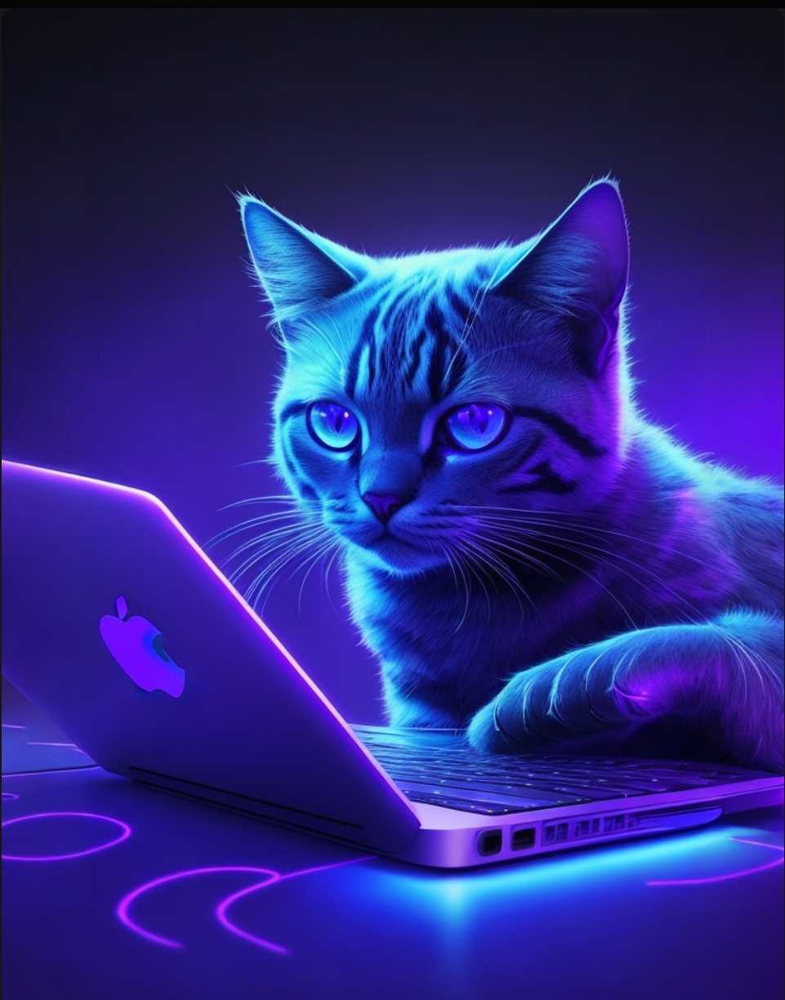

природа вокруг нас

Природа вокруг нас полна удивительных и красивых явлений. От величественных гор и водопадов до маленьких и чудесных созданий, которые обитают в наших садах и парках. В этой статье мы рассмотрим несколько природных чудес, их стоит увидеть лично, они напоминают нам о величии и разнообразии мира, в котором мы живем.
Величественные горы:
Это одно из самых впечатляющих природных явлений. Их мощь и красота притягивают людей со всего мира. Независимо от того, находятся ли они в горной цепи Гималаи, Альпы или Рокки, горы всегда вызывают в нас чувство благоговения и восхищения. Их величественные вершины, заснеженные склоны и горные озера создают неповторимый пейзаж, который стоит увидеть хотя бы раз в жизни.
Волшебные водопады:
Они еще одно удивительное природное явление, которое поражает своей красотой и силой. Зрелище, когда вода стремительно падает с высоты, создавая облака брызг и ревущий шум, просто завораживает. Некоторые известные водопады, такие как Виктория, Анхель и Анхель-Фолс, привлекают туристов со всего мира. Наблюдать, как вода обрушивается с высоты и создает радугу, является незабываемым опытом, который стоит испытать.
Чудеса подводного мира:
Природа не перестает удивлять нас и под водой. Коралловые рифы, которые являются домом для тысяч видов рыб и других морских существ, предлагают нам уникальную возможность заглянуть в их мир. Яркие цвета и удивительные формы кораллов, а также разнообразие видов рыб и морских обитателей делают подводный мир настоящим чудом природы. Подводное плавание или сноркелинг становятся возможностью увидеть этот волшебный мир своими глазами.
Маленькие чудеса в наших садах:
Природа удивительна и ближе к нам. Наши сады и парки являются домом для множества маленьких и чудесных созданий. Разнообразие цветов, растений и насекомых делает их местом, где можно наблюдать удивительные природные процессы. Красивые бабочки, пение птиц и запах цветов создают атмосферу сказки, которую мы можем наслаждаться прямо у себя дома.
Заключение:
Удивительная природа вокруг нас напоминает нам о величии и разнообразии мира, в котором мы живем. Горы, водопады, подводный мир и наши сады - все они предлагают нам неповторимые впечатления, и возможность заглянуть в удивительный мир природы. Не забывайте ценить и беречь эту красоту, чтобы будущие поколения также могли наслаждаться ею.
Бусинка

В мире полном удивительных существ, маленькие кошки всегда занимают особое место в наших сердцах. Одна из таких кошечек - Бусинка, которая принесла радость и волшебство в жизнь своих хозяев. В этом блоке мы расскажем вам историю о маленькой кошечке по имени Бусинка и о том, как она стала настоящим членом семьи.
Бусинка родилась на улице и была найдена одним добрым человеком, который решил взять ее домой. С самого начала было видно, что Бусинка - особенная кошечка. У нее большие, яркие глаза и мягкая, пушистая шерсть. Ее игривый нрав и непосредственность сразу же покорили сердца всех в семье.
С первых дней Бусинка стала надежным другом и компаньоном своих хозяев. Она всегда рядом, поднимая настроение и принося радость своим присутсвием. Бусинка также очень умная кошечка. Она быстро научилась открывать двери и выполнять некоторые команды, чем поразила всех своими способностями.
Но самое удивительное в Бусинке ее способность понимать эмоции и поддерживать своих хозяев в трудные моменты. Когда кто-то из семьи грустный или усталый, Бусинка всегда приходит и устраиваеться рядом, мурлыкая и лаская своим мягким мехом. Ее присутствие и нежность помогали расслабиться и забыть о проблемах.
Бусинка также искусная охотница. Ее быстрые и грациозные движения позволяли ей ловить насекомых и игрушки с легкостью. Это было зрелище, которое всегда вызывало восхищение у всех, кто наблюдал за ней. Вместе с тем она очень игривая и любит проводить время с игрушками и ловить лазерный луч, что доставляет всем веселье и смех.
Бусинка стала неотъемлемой частью семьи. Ее доброта, преданность и любовь делали ее настоящим сокровищем. Мы не могли представить свою жизнь без нее. Бусинка источником радости и утешения, а ее присутствие наполняет дом теплотой и любовью.
В заключении:
История маленькой кошечки по имени Бусинка - это история о дружбе, преданности и взаимной любви. Она показывает, как животное может стать настоящим членом семьи и принести в нее радость и счастье. Бусинка - прекрасный пример того, как даже самая маленькая и скромная кошечка может оказать огромное влияние на нашу жизнь.
мир шитья

Шитье - это не только полезное и практичное умение, но и увлекательный творческий процесс, который может приносить огромное удовольствие. Если вы хотите научиться шить и создавать уникальные вещи, то кройка и шитье дома - это то, что вам нужно.
Одной из главных причин, почему люди начинают заниматься шитьем, является возможность создавать собственные, уникальные вещи. В магазине мы часто сталкиваемся с одеждой, которая не всегда соответствует нашим предпочтениям или индивидуальному стилю. Однако, когда вы начинаете шить самостоятельно, вы можете выбирать ткани, фасоны и детали, чтобы создавать идеальные вещи, которые подходят именно вам.
Кроме того, шитье дома может стать отличным способом релаксации и отдыха от повседневных забот. Время, проведенное за швейной машинкой или вырезая детали, может стать настоящим медитативным опытом. Вы впитываете себя в творческий процесс, забываете о проблемах и стрессе, и погружаетесь в мир творчества.
Занятие шитьем дома может стать отличным способом развития и раскрытия своих талантов. Вы можете изучать новые техники и приемы, совершенствовать свои навыки и расширять кругозор в области моды и дизайна. Шитье - это своего рода искусство, которое позволяет вам выразить свою индивидуальность и креативность через создание уникальных вещей.
Шитье дома может стать источником дополнительного дохода. Если у вас есть талант и умение в области шитья, вы можете создавать вещи для продажи или принимать заказы. Многие люди ценят ручную работу и готовы платить за уникальные и качественные изделия. Таким образом, шитье дома может стать не только увлекательным хобби, но и дополнительным источником дохода.
Начать заниматься кройкой и шитьем дома довольно просто. Вам понадобится швейная машинка, набор инструментов и материалы для шитья. Вы можете изучать основы шитья через онлайн-уроки или посещать мастер-классы. Важно помнить, что умение шить приходит с практикой, поэтому не бойтесь экспериментировать и делать ошибки.
В итоге кройка и шитье дома - это увлекательное и творческое занятие, которое может приносить огромное удовольствие. Вы сможете создавать уникальные вещи, находить релаксацию и умиротворение в творческом процессе, развиваться и раскрывать свои таланты. Не бойтесь попробовать и начать шить дома - возможно, это станет вашим новым увлечением и источником радости.
нейросеть, что это?!

Нейросети - это компьютерные системы, которые способны обрабатывать информацию и делать выводы, используя методы искусственного интеллекта. Они имеют огромный потенциал для применения в различных сферах жизни, включая быт и творчество. В этой статье мы рассмотрим полезность использования нейросети в повседневной жизни и для развития творческих навыков.
Одной из основных причин, почему нейросети полезны в быту, является их способность автоматизировать и упростить множество задач. Например, нейросети могут быть использованы для умного дома, где они могут контролировать освещение, отопление, безопасность и другие системы. Это позволяет сделать жизнь более комфортной и эффективной, освобождая время и ресурсы для других важных дел.
Кроме того, нейросети могут быть полезны при автоматизации рутинных задач. Например, они могут обрабатывать электронную почту и фильтровать спам, распознавать и классифицировать изображения, автоматически сортировать и архивировать файлы и многое другое. Это позволяет сэкономить время и силы, которые можно потратить на более творческие и значимые задачи.
В области творчества нейросети также показывают потрясающие результаты. Они могут быть использованы для создания искусств, например, генерации музыки, рисунков, стихов и даже фильмов. Нейросети способны анализировать огромные объемы данных и обучаться на основе существующих произведений и стилей, что позволяет им создавать уникальные и оригинальные работы. Это дает возможность художникам и творческим людям экспериментировать и расширять свой творческий потенциал.
Также, нейросети могут быть использованы в качестве инструмента для улучшения и оптимизации творческого процесса. Например, они могут помочь в создании дизайна, выборе цветовой гаммы или композиции, анализировать данные и предлагать новые идеи. Это может быть особенно полезно для дизайнеров, художников и других творческих профессионалов, которые ищут новые способы воплотить свои идеи в жизнь.
Однако, несмотря на все преимущества, нейросети также имеют свои ограничения и вызывают вопросы в области этики и безопасности данных. Важно использовать их с осторожностью и соблюдать все правила и законы, связанные с обработкой и хранением данных.
По итогу использование нейросети в быту и для творчества предоставляет множество преимуществ. Они упрощают повседневные задачи, автоматизируют рутинные процессы, способствуют развитию творческих навыков и предлагают новые возможности для экспериментов и инноваций. Однако, важно помнить, что нейросети - это инструмент, который должен быть использован с умом и ответственностью.